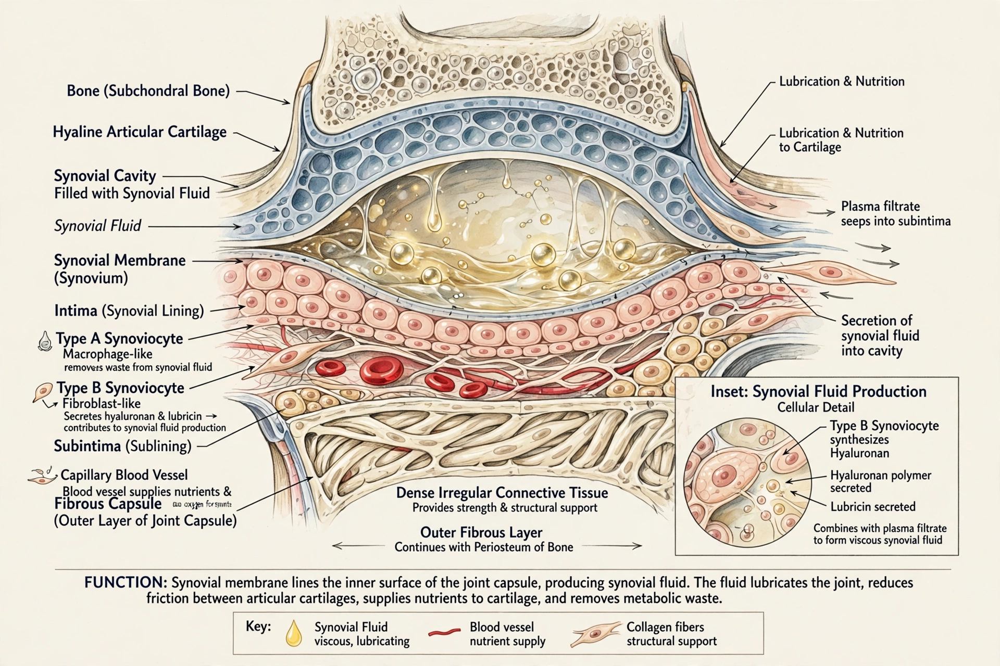

| Synovial membrane | |
|---|---|
 | |
| System | Musculoskeletal |
| Part of | Joint capsule, synovial joint |
| Latin | membrana synovialis |
The synovial membrane (also known as the synovial stratum, synovium, or stratum synoviale) is a specialised connective tissue that lines the inner surface of the joint capsule in synovial joints, as well as tendon sheaths and bursae. It secretes synovial fluid into the synovial cavity.
The membrane has two layers: an inner intima of synoviocytes — type A macrophage-like cells that clear debris, and type B fibroblast-like cells that produce hyaluronic acid and lubricin — and an outer subintima of vascular connective tissue. It does not cover articular cartilage.
Synovial fluid lubricates the joint, nourishes cartilage, and removes waste. The membrane regulates fluid volume and composition and mediates immune responses within the joint.
Inflammation of the membrane (synovitis) is central to rheumatoid arthritis, where a proliferative pannus destroys cartilage and bone. Synovitis also occurs in osteoarthritis, infection, and gout. Synovectomy and biopsy are sometimes performed.